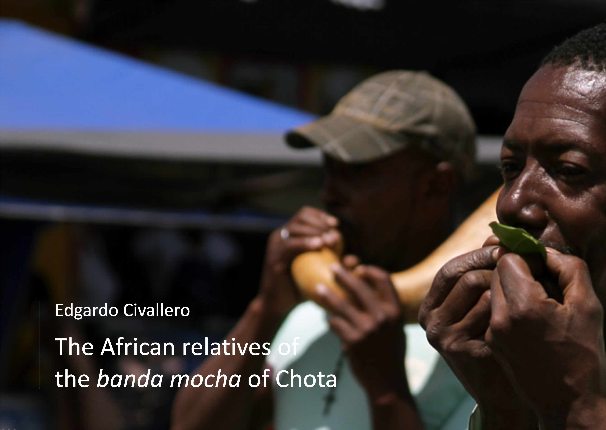

The African relatives of the banda mocha of Chota
Home > Digital books on music. Series 1 > The African relatives of the banda mocha of Chota
How to cite this work: Civallero, Edgardo (2025). The African relatives of the banda mocha of Chota. Archive edition. Bogota: El Zorro de Abajo Editora.
First edition, 2025. Archive edition, 2025 (El Zorro de Abajo Editora).
Download in PDF.
This book explores one of the most unusual Afro-descendant musical traditions of the Andes: the banda mocha of Ecuador's Chota River valley. Emerging in the late nineteenth or early twentieth century, these rural ensembles reproduced the instrumentation and sonic organization of European-style military and civic bands without relying on conventional brass and woodwind instruments. Instead, musicians transformed materials available in their agricultural surroundings — gourds, agave stalks, cane, leaves, drums, metal objects, and animal remains — into an ensemble capable of imitating clarinets, saxophones, trombones, trumpets, tubas, and percussion. From this distinctive musical practice, the study follows a comparative path across the Atlantic, searching for parallels in African traditions of instrumental imitation, voice amplification, and locally constructed bands.
The work begins by situating the banda mocha within the history of Afro-Ecuadorian communities. Two major centers of long-established Afro-descendant settlement developed in Ecuador: the coastal province of Esmeraldas and the Chota Valley, between Imbabura and Carchi. In the latter, enslaved Africans were brought to work on Jesuit and private estates producing sugarcane, cotton, and grapes. Even after the abolition of slavery in the nineteenth century, systems such as huasipungo maintained severe forms of dependency well into the twentieth century. Within these conditions, Afro-Choteño communities preserved and developed distinctive cultural forms, including the bomba musical genre and the banda mocha.
The ensemble's most characteristic instruments are the puros, dried and hollowed gourds of several sizes. Small altos carry the principal melodic line in the manner of clarinets; medium-sized segunderos provide harmonic figures and ornamental lines comparable to saxophones or trombones; and large bajos occupy the register of tubas and euphoniums. Hollowed stalks of penco, the flowering stem of agave, provide additional wind-like voices, while fresh leaves from orange, capulí, or mandarin trees can imitate higher-pitched instruments. Cane pífanos or pinkillos substitute for flutes and piccolos. Percussion includes bass and snare drums, güiros, cymbals, and occasionally a donkey jawbone.
Despite their appearance, the gourds and agave stalks are not true trumpets. They function primarily as resonators for the human voice. The player vocalizes into the instrument, modifying timbre and pitch in order to imitate a particular member of a conventional band. In this respect, the technique approaches that of the mirliton or kazoo: the instrument reshapes and amplifies a vocal sound rather than producing its tone through the vibration of the player's lips against an air column. This principle is central to the book's argument, because similar gourd voice-amplifiers and imitation bands are rare or undocumented elsewhere in the surrounding Andean and Latin American musical landscape.
The search for meaningful parallels therefore leads to Africa. Across large parts of the continent, gourds have long been used for trumpets, horns, resonators, and other aerophones, both as solo instruments and in large ensembles. The study surveys examples from Nigeria, Uganda, Kenya, Chad, Sudan, Ethiopia, Cameroon, and neighboring regions, including the akpaele of the Anioma Igbo, the upe of the Yoruba, the amakondere ensembles of Uganda, the enormous waza trumpets of Ethiopia and Sudan, and numerous related traditions. Of particular significance, however, are instruments that operate not as trumpets in the strict organological sense, but as amplifiers and modifiers of the human voice.
These African practices become especially revealing in traditions that developed around the imitation of European military bands. During the nineteenth and twentieth centuries, colonial military and police ensembles became influential models throughout parts of West, East, and Central Africa. Local musicians reproduced their organization, marches, uniforms, and sound, sometimes using imported brass instruments but often replacing them with locally available materials. The adaha traditions of Ghana and the widespread beni complex of East Africa are among the best-known examples. As these practices moved inland, European winds were increasingly replaced by drums, gourds, kazoos, and vocal resonators. Among the Nyakyusa, for instance, gourd horns imitate trumpets, French horns, tubas, and clarinets; among the Chewa of Malawi, mganda performers use gourd mirlitons known as badza; and malipenga ensembles employ chigubu gourd horns in place of manufactured brass instruments.
The comparison reveals a striking formal correspondence with the Ecuadorian banda mocha: in both cases, musicians confronted the prestigious sonic model of the European band and reconstructed it through available materials, vocal imitation, local percussion, and pre-existing musical knowledge. Yet the book deliberately avoids presenting this resemblance as evidence of a direct historical transfer. The African gourd bands examined here developed largely during the late nineteenth and early twentieth centuries, after the Atlantic slave trade to Ecuador had ended, while the banda mocha itself emerged only after the abolition of slavery. The chronological evidence therefore does not support the idea that a fully formed African ensemble crossed the Atlantic and survived unchanged in the Chota Valley.
What the evidence does permit is a more subtle possibility. Many enslaved Africans brought to Ecuador were identified historically as "Congos," a broad designation covering people originating in parts of Central and East Africa. The regions involved included territories that today form Zambia, Malawi, Mozambique, Tanzania, Angola, and the Congo basin — precisely areas where traditions of gourd resonators, vocal imitation, and locally reconstructed bands later became strongly documented. The resemblance between the African and Ecuadorian cases may therefore reflect related cultural capacities and inherited ways of transforming sound rather than the transmission of a single fixed musical form.
The book closes by considering the uncertain future of the bandas mochas themselves. Ensembles such as those of Chalguayacu, Mira, El Juncal, Paragachi, and other Chota communities preserve a musical practice more than a century old, yet many struggle to attract younger musicians. Their survival depends increasingly on documentation, public recognition, transmission, and renewed cultural exchange. Seen from this perspective, the African comparison is more than an exercise in tracing origins. It opens the possibility of reconnecting musical practices separated by the Atlantic and of understanding the banda mocha as part of a much wider history of African-descendant creativity: the transformation of imposed musical models through voice, memory, available materials, and the stubborn ingenuity of sound.